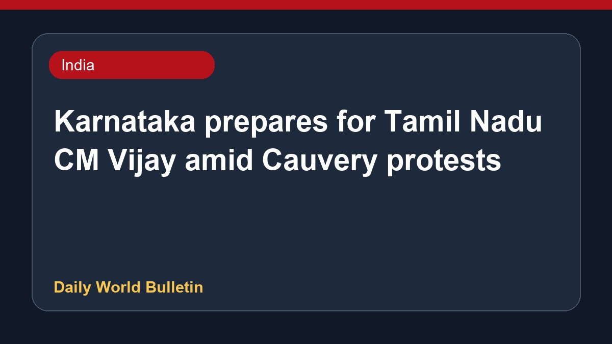

Karnataka prepares for Tamil Nadu CM Vijay amid Cauvery protests

Karnataka is making preparations for a potential visit by Tamil Nadu Chief Minister Vijay. Meanwhile, activists in Mandya have stepped up agitations regarding the Cauvery water sharing dispute, disrupting the screening of the Tamil Nadu leader's film 'Jana Nayagan'. In addition, the Central Water Commission has returned Karnataka's revised Mekedatu project report due to proposed alterations, while the Karnataka Chief Minister has extended an invitation to inspect local reservoirs by helicopter.
Original source: India News Sources
Karnataka getting ready for Tamil Nadu CM Vijay’s possible visit - The Hindu ↗
Karnataka getting ready for Tamil Nadu CM Vijay’s possible visit - The Hindu ↗